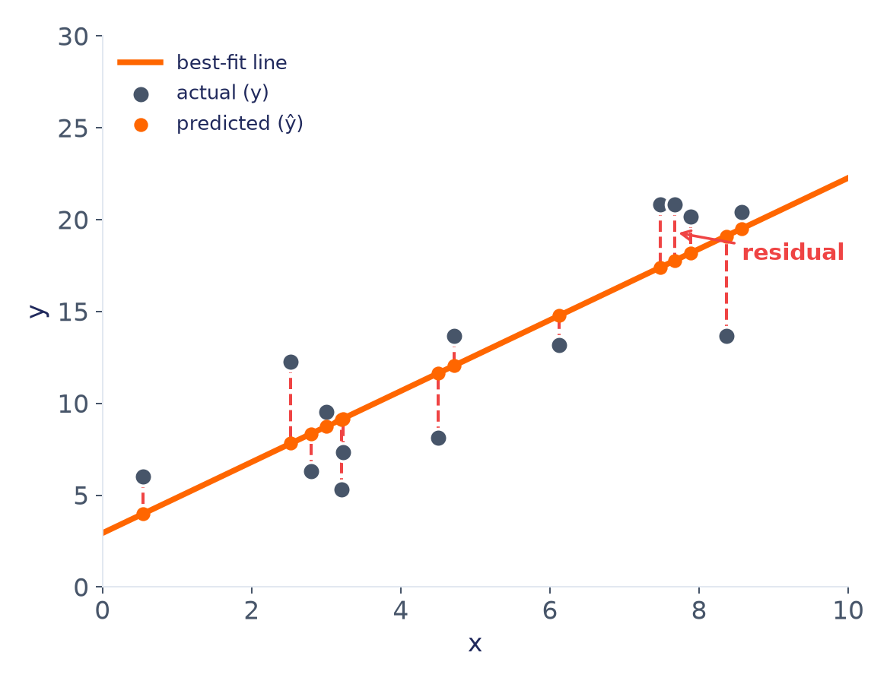
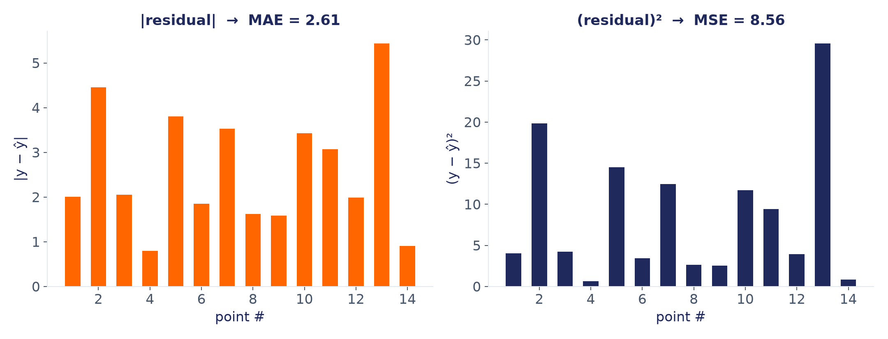
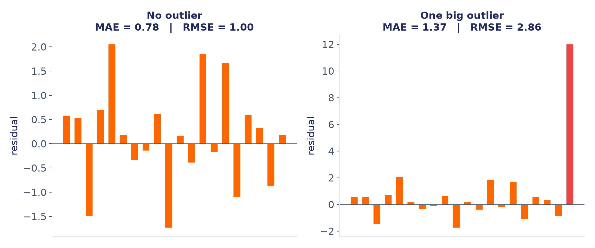
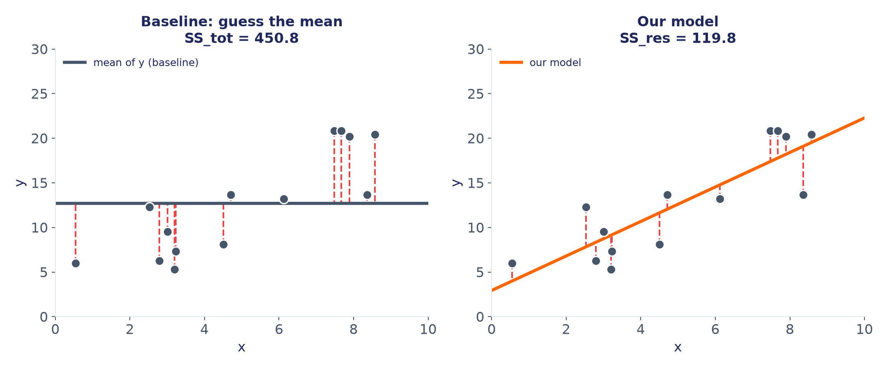

هفته سوم · بخش ۴
ارزیابی مدل
R² · RMSE · MAE
گیلانمهارت · یادگیری ماشین
چرا اندازهگیری کنیم؟
فقط نگاه کردن به پیشبینیها کافی نیست
یک مدل ممکن است هیچ خطای برنامهنویسی نداشته باشد، اما پیشبینیهای بدی بدهد. باید یک عدد داشته باشیم که بگوید مدل چقدر خوب است، تا بتوانیم:
- مدلها را با هم مقایسه کنیم
- بفهمیم آیا مدل برای استفاده واقعی کافی است
- پیشرفت (یا افت) بعد از هر تغییر را اندازه بگیریم
هفته سوم · ارزیابی مدل
یادآوری
همان نقاط ساده و همان خط را به یاد بیاورید
از همین دادهی سادهی بخش ۱ دوباره استفاده میکنیم، اینبار برای اندازهگیری خطای مدل.

هفته سوم · ارزیابی مدل
باقیمانده
فاصلهی هر نقطه تا خط، یک «باقیمانده» است

خطچینهای قرمز، فاصلهی هر نقطهی واقعی (y) تا پیشبینی مدل (ŷ) روی خط را نشان میدهند.
residual = y − ŷ
هفته سوم · ارزیابی مدل
خلاصهسازی
این باقیماندهها را چطور در یک عدد خلاصه کنیم؟
هر متریکی که در ادامه میبینیم (MAE، RMSE، R²)،
فقط یک روش متفاوت برای میانگینگیری از همین باقیماندههاست.
هفته سوم · ارزیابی مدل
دیدن نتیجه
همان باقیماندهها، دو روش خلاصهسازی

هفته سوم · ارزیابی مدل
متریک اول
MAE: میانگین قدرمطلق خطا
MAE = mean( |y − ŷ| )
- همواحد با y است
- بهراحتی قابل تفسیر است: «بهطور میانگین، اینقدر اشتباه میکنیم»
- به هر خطا، بدون توجه به بزرگیاش، وزن یکسان میدهد
هفته سوم · ارزیابی مدل
متریک دوم
MSE و RMSE
MSE = mean( (y − ŷ)² )
RMSE = √MSE
- MSE همان چیزی است که مدل در پشت صحنه کمینه میکند
- واحد MSE «مجذور واحد y» است؛ به همین دلیل از RMSE استفاده میکنیم که دوباره همواحد با y است
- چون خطا مجذور میشود، خطاهای بزرگ (outlier) جریمهی نامتناسب سنگینتری میگیرند؛ دقیقاً همان چیزی که در نمودار قبل دیدیم
هفته سوم · ارزیابی مدل
مقایسه
MAE در برابر RMSE
| MAE | RMSE | |
|---|---|---|
| حساسیت به outlier | کم | زیاد |
| تفسیر | سادهتر | کمی پیچیدهتر، همواحد |
| مناسب وقتی... | چند خطای بزرگ نباید کل ارزیابی را خراب کند | خطاهای بزرگ واقعاً «بدتر»ند و باید جریمه شوند |
فاصلهی زیاد بین MAE و RMSE خودش نشانهی وجود چند outlier بزرگ در خطاهاست.
هفته سوم · ارزیابی مدل
دیدن اثر outlier
یک outlier، اثر متفاوت روی هر متریک

هفته سوم · ارزیابی مدل
دیدن نتیجه
قبل از فرمول R²: با چه چیزی مقایسه میکنیم؟

هفته سوم · ارزیابی مدل
متریک سوم
R²: ضریب تعیین
به زبان ساده: R² میگوید مدل ما، در مقایسه با سادهترین حدس ممکن (میانگین y)، چند درصد از تغییرات y را توضیح داده است.
R² = 1 − (SS_res / SS_tot)
SS_res = مجموع (y − ŷ)²
→ خطای مدل ما (نمودار سمت راست)
→ خطای مدل ما (نمودار سمت راست)
SS_tot = مجموع (y − ȳ)²
→ خطای «حدس زدن میانگین» (نمودار سمت چپ)
→ خطای «حدس زدن میانگین» (نمودار سمت چپ)
هفته سوم · ارزیابی مدل
تفسیر R²
مدل چند درصد از پراکندگی را توضیح میدهد؟
R² < 0: بدتر از میانگین
R² = 0: مثل حدس میانگین
R² نزدیک ۱: توضیح خوب
- R² = 1 → پیشبینی کامل، بدون خطا
- R² = 0 → مدل، هیچ بهتر از حدسزدن میانگین y نیست
- R² < 0 → مدل از حدس سادهی میانگین هم بدتر است (ممکن است روی داده تست پیش بیاید)
- برخلاف MAE/RMSE، واحد ندارد → مقایسهی مدلها روی دیتاستهای مختلف را سادهتر میکند
هفته سوم · ارزیابی مدل
این متریکها را همیشه روی دادهی Test حساب کنید.
یک عدد خوب روی دادهی آموزش، هیچ تضمینی نمیدهد که مدل روی دادهی جدید هم خوب عمل کند.
هفته سوم · ارزیابی مدل